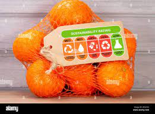
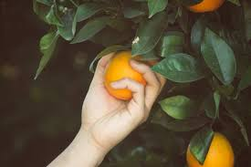
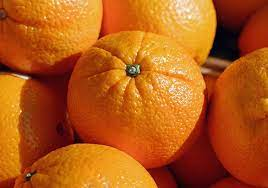
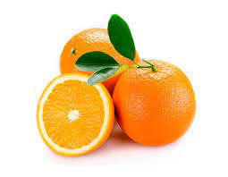
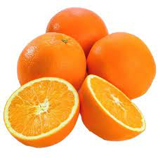

Bienvenido a Naranjas
Somos una empresa familiar dedicada a la producción y venta de naranjas de alta calidad.
Nuestros valores
Calidad
Nuestros productos son cuidadosamente seleccionados y envasados para garantizar la frescura y sabor de nuestras naranjas.

Sostenibilidad
Trabajamos con métodos sostenibles y respetuosos con el medio ambiente para cuidar y proteger nuestra tierra.

Compromiso
Nos esforzamos cada día para ofrecer un servicio de calidad a nuestros clientes y cumplir con sus expectativas.
Productos destacados

Naranjas Valencia
Variedad de naranjas dulces y jugosas, perfectas para zumos o para comer directamente.

Naranjas Navelina
Variedad de naranjas de piel fina y fácil pelado, ideales para postres o para llevar en la merienda.

Naranjas de mesa
Variedad de naranjas grandes y jugosas, perfectas para acompañar en ensaladas o como postre.